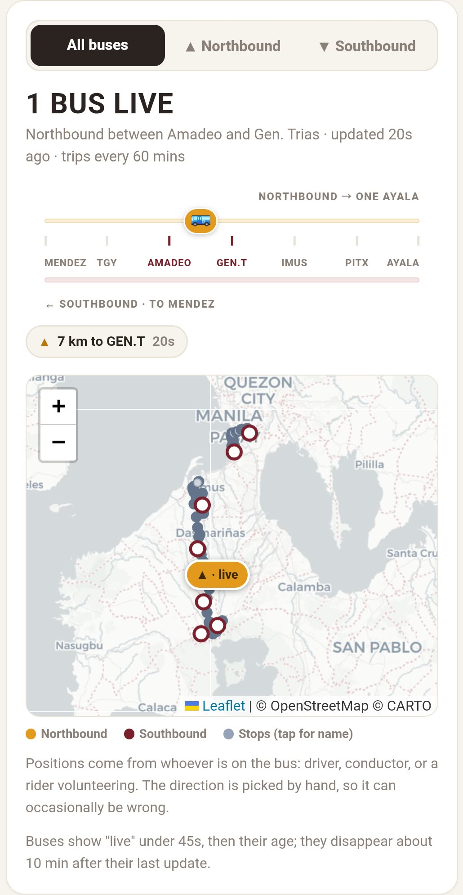
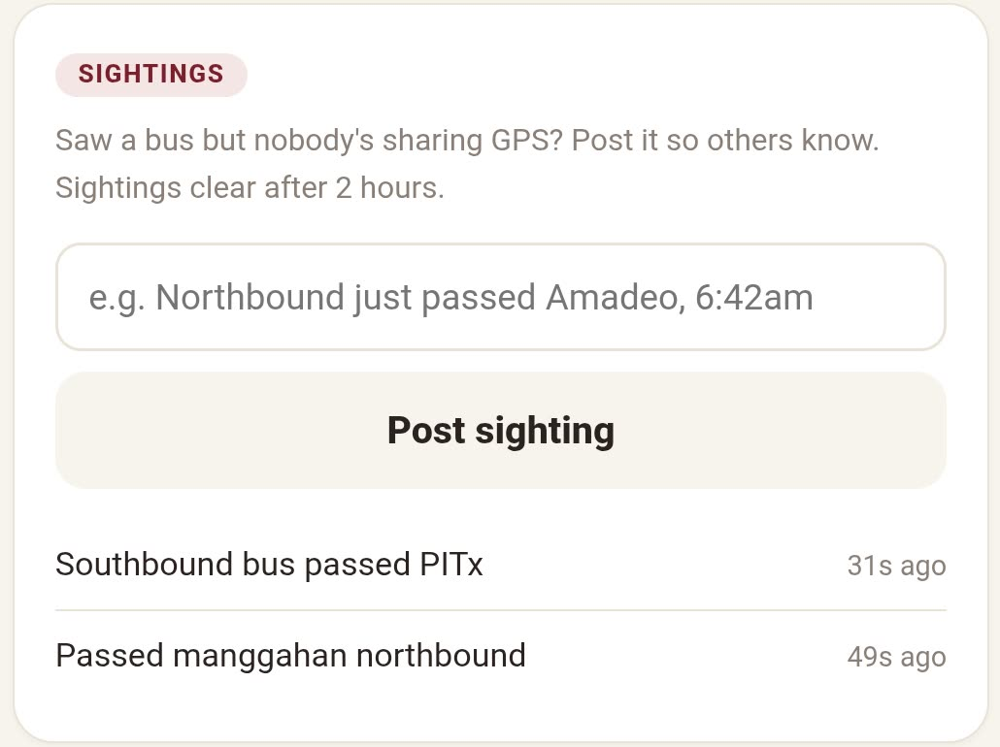
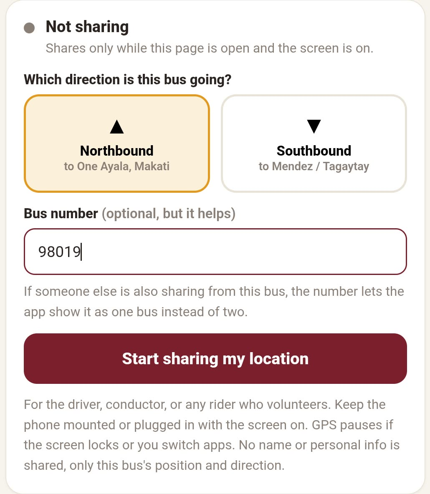
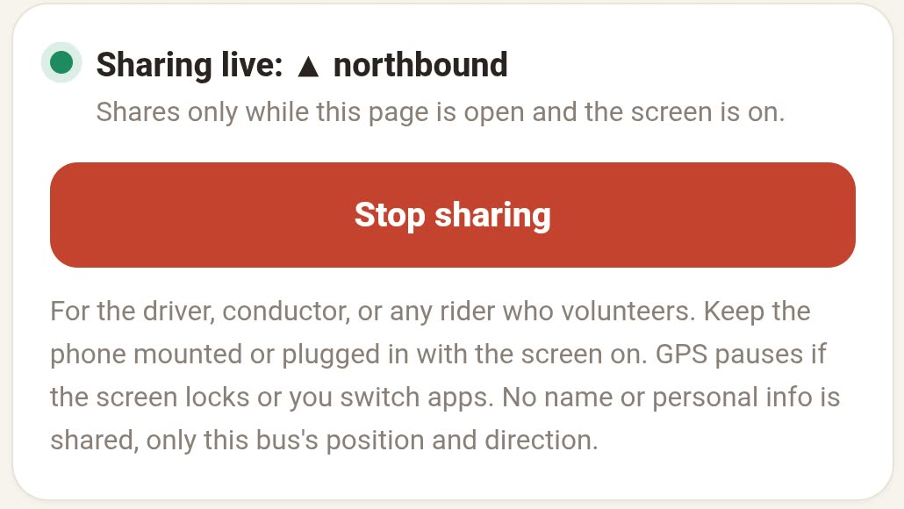

This page shows where the buses are right now, because someone on board is sharing the position. No app to install, no account, no sign-up. Open the link and look.

1 2 3 4Community-run and unofficial. It is not operated by or connected to the bus company.
Nothing is asked of you. Watching never uses your location and the browser never prompts for it.
The strip is the whole route flattened into a line, Mendez on the left and One Ayala on the right. Each 🚌 is a bus. Gold rides the top rail northbound, maroon rides the bottom rail southbound.
Only care about buses heading to Ayala? Tap ▲ Northbound and the rest drop away.
Every bus says when it last moved: updated 2 mins ago. A bus that has gone quiet fades out, and drops off entirely once it is clearly stale. A faded bus is a guess, not a position.
Early morning, late evening, or just a quiet stretch: often no one on board is sharing. Post what you saw instead, and everyone else gets something to go on.
Short and specific beats vague. “Northbound just passed Amadeo, 6:42am” is useful. “Bus coming” is not.

If you are the driver, the conductor, or a rider willing to help, you can put this bus on everyone's map for the trip.
The second tab, next to the map.
Northbound to One Ayala, southbound to Mendez. Get this right — it decides which rail your bus rides on, and a bus shown going the wrong way is worse for someone waiting than no bus at all.
Optional, but it helps. If someone else on the same bus is also sharing, the number lets the app show one bus instead of two.

The browser asks for location permission once. Say yes and the bus appears on the map within seconds.
Sharing only runs while this page is open and the screen is on. Lock the phone or switch apps and the position stops updating. Mounted on the dashboard and plugged in is the way to do it.
Tap Stop sharing and the bus leaves everyone's map immediately. Nothing about the trip is kept.

The app watches for the few ways a share goes wrong on its own, and asks rather than guessing. You will not see these often.
There is one more: if someone near you is already sharing in the same direction, you get asked whether it is the same bus, so one bus does not show up as two.
No accounts, no names, no phone numbers. No location history at all — there is one row per active share, overwritten in place, and it is deleted the moment you stop. There is no trail to look back through, so nobody can review a driver's speed, breaks, or route. The data to do that does not exist.
The full explanation lives in “How your data is handled” on the map page.